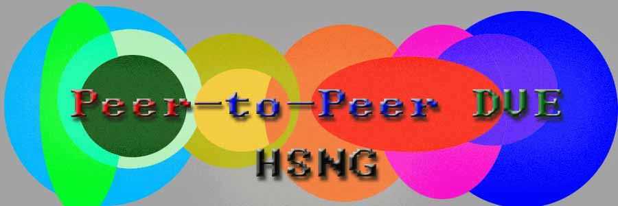

A Study on Network Virtual Environment in Ad Hoc P2P Networks
- [DVE]
- Thomas A Funkhouser. Network Topologies for Scalable Mulit-User Environments.
IEEE VRAIS, 1996. [
.pdf
]
- [DVE]
- . Channeling the data flood.
IEEE Spectrum, 1997. [
.pdf
]
- [DVE]
- Joaquin KELLER, Gwendal SIMON. Toward a Peer-to-Peer Shared Virtual Reality addresses..
ICDCSW, 2002. [
.pdf
]